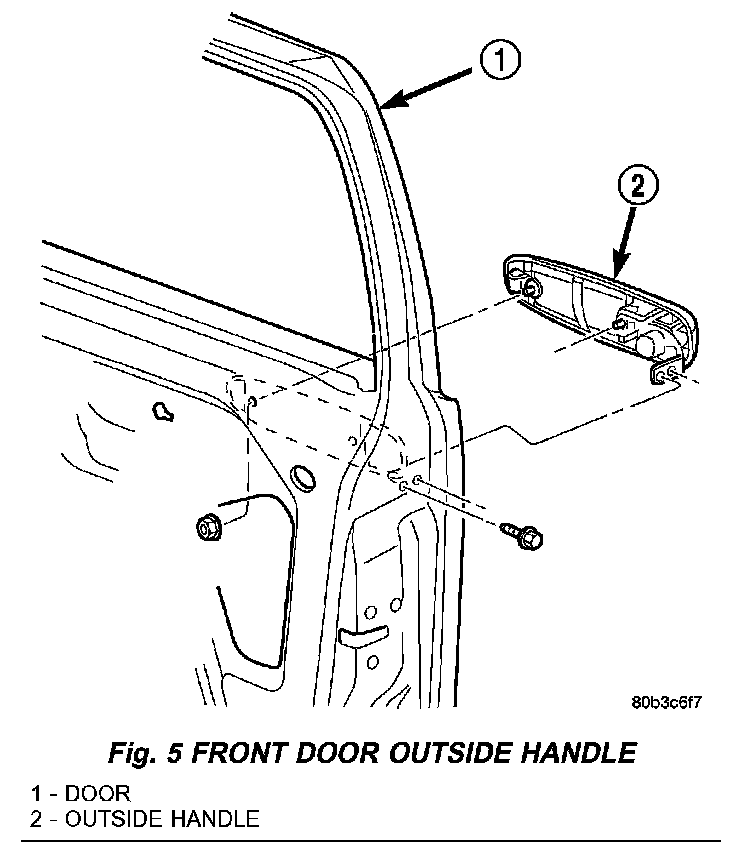

Front Door Exterior Handle: Service and Repair
EXTERIOR HANDLEREMOVAL
1. Raise the glass to the full up position and remove glass run channel.
2. For the drivers door, disconnect lock cylinder to latch rod.
3. Disconnect exterior handle to latch rod
Fig. 5:

4. Remove fasteners attaching outside handle to door (Fig. 5).
5. Remove outside handle from door.
6. Disconnect anti-theft harness connector, if equipped.
7. Separate outside handle from vehicle.
INSTALLATION
1. Position exterior handle at door (Fig. 5).
2. Connect anti-theft harness connector, if equipped.
3. Position the handle on the door and slide fully toward the rear of the door.
4. Install nuts attaching exterior handle to door and tighten to 6 N.m (55 in. lbs.).
5. For the drivers door, install the screws attaching the key cylinder screws bracket and tighten to 6 N.m (55 in. lbs.).
6. Connect exterior handle to latch rod
7. For the drivers door, connect lock cylinder to latch rod.
8. Install glass run channel.